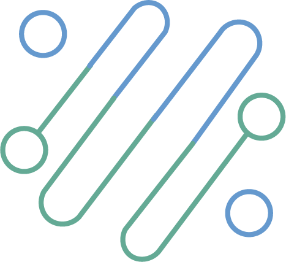

<ion-header [translucent]="true">
    <ion-toolbar slot="start">
      <div class='column left'>
        <div class="mainTitle">
          
        </div>
        <div class="version">v {{version}}</div>
      </div>
      <div class="column middle">
        <ion-title>{{coreName}}</ion-title>
        <div class="doorsButton-toggle">
          <ion-label (click)="toggleButtons()">
            {{visible ? 'Ocultar' : 'Visualizar'}}</ion-label>
          <ion-icon  [name]="visible ? 'chevron-up-outline' : 'chevron-down-outline'" 
          (click)="toggleButtons()" style="padding-left: 5px;"></ion-icon>
       </div>
      </div>
      <div class="column right">
        <span [hidden] = "MyRole != 'admin'" >
          <ion-buttons slot="end">
            <ion-button id="popover-button">
              <ion-icon  name="ellipsis-vertical-outline"></ion-icon>
            </ion-button>
          </ion-buttons>
        </span>
        
        <span [hidden] = "MyRole == 'admin'">
          <ion-buttons slot="end">
            <ion-button (click)="logout()">
              <ion-icon  name="exit-outline"></ion-icon>
            </ion-button>
          </ion-buttons>
        </span>
      </div>
      
  </ion-toolbar>
</ion-header>

<ion-content [fullscreen]="true">

  <!-- fab placed to the bottom end -->
  <ion-fab vertical="bottom" horizontal="end" slot="fixed">
    <ion-fab-button class="button-green">
      <ion-icon name="add"></ion-icon>
    </ion-fab-button>
    <ion-fab-list side="top">
      <ion-fab-button class="button-green" (click)="newVisitor()">
        <ion-icon name="person-outline"></ion-icon>
      </ion-fab-button>

      <ion-fab-button class="button-green" (click)="ModalUsers()">
        <ion-icon name="lock-closed-outline"></ion-icon>
      </ion-fab-button>
    </ion-fab-list>
  </ion-fab>

  <!-- <ion-fab vertical="bottom" horizontal="end" slot="fixed">
    <ion-fab-button class="button-green" (click)="newVisitor()">
      <ion-icon name="person-outline"></ion-icon>
    </ion-fab-button>
  </ion-fab> -->


  <!-- <ion-fab [hidden]="!SoyNeighborAdmin" vertical="bottom" horizontal="end" >
    <ion-fab-button class="button-green" (click)="ModalUsers()">
      <ion-icon name="lock-closed-outline"></ion-icon>
    </ion-fab-button>
  </ion-fab> -->

  <!-- Popover ---------------------------- -->


<ion-popover trigger="popover-button" [dismissOnSelect]="true">
  <ng-template>
    <ion-content>
      <ion-list>
        <ion-item-group>
          <ion-item [button]="true" [detail]="false" 
            (click)="openFamily()">Familia</ion-item>
          <ion-item [button]="true" [detail]="false" 
            (click)="recoverAccount()">Recupera cuenta</ion-item>
          <ion-item [button]="true" [detail]="false" 
            (click)="deviceLost()">Celular perdido</ion-item>
          <ion-item [button]="true" [detail]="false" 
            (click)="localNotification()">Local notification</ion-item>
          <ion-item [button]="true" [detail]="false" 
            (click)="fcmNotification()">FCM notification</ion-item>
          <ion-item id="logout1-alert" [button]="true" [detail]="false" 
          (click)="logout()">Log out 
          {{myEmail}}</ion-item>
        </ion-item-group>
      </ion-list>
    </ion-content>
  </ng-template>
</ion-popover>

<!-- --------------------------------------------  -->

    <!-- Bi-color -->
    <div slot="fixed" class="aperturas" *ngIf="visible">
        <ion-button class="doorsButton-green" 
          (click)="sendOpening('open,peatonal')">Peatonal</ion-button>
        <ion-button class="doorsButton-blue" 
          (click)="sendOpening('open,vehicular')">Vehicular</ion-button>
    </div> 

    <ion-refresher slot="fixed" (ionRefresh)="doRefresh($event)">
      <ion-refresher-content >
        
      </ion-refresher-content>
    </ion-refresher>

  <div id = "infoSection" class="info">
    <ion-card class="" *ngFor="let item of localInfo; let i = index;">
      <ion-card-header>
        <ion-card-title>{{item.title}}</ion-card-title>
        <ion-card-subtitle>{{item.createdAt}}</ion-card-subtitle>
      </ion-card-header>
      <ion-card-content class="" (click)="openUrl(item.url)">
          
            <p>
              {{item.description}}
            </p>
      </ion-card-content>
    </ion-card>
  </div>
 

</ion-content>
